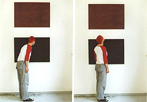

|  |  |  |  |  |
|
 click here to view text on red canvas |
 |
A Color and a Field oil paint, 2 cotton canvases, vinyl letters 1 x 1.60 meters 2001 What most viewers see in the beginning is different from what they see in the end. Initial reactions to this simple color field painting are something like, (sigh) "Oh my god, there's another one of those 'modern' art pieces ... one of those paintings my 5-year-old could have made." But within a few seconds, most people notice the subtle string of red lip prints going across the top of the black canvas. When they come in closer to investigate, they usually notice the large black vinyl letters on the bottom side of the red canvas that say, "She bought lipstick for the funeral from the new Unspeakable Grief line guaranteed not to fade for up to eight hours." (view close up) |
|
That's my friend Ilja with the red hair demonstrating the experience of about 75% of the people who've seen this piece. The other 25% walked away too soon, didn't take a closer look.
JFK Jr.'s Death The idea for this text comes from two experiences with 'decorated grief.' The seed of the idea came from the weekend when JFK Jr. died. The plane he was flying with his wife and sister-in-law disappeared over the ocean but no one knew for sure if they were dead or alive. During the weekend I occasionally turned on the TV to see if they had been found. At one point, CNN was playing dramatic music that made me feel like I was watching a film and they had the words 'unspeakable grief' on the screen. The word 'unspeakable' was written in a fancy flowing script and the word 'grief' was written in block letters. There was nothing 'raw' about the sadness. It was really decorative. People had made conscious artistic decisions. Ophelia's Death Later that year I saw the version of Hamlet with Ethan Hawke. When Ophelia dies, Hamlet's mother wears this incredibly bright red lipstick to the funeral. Everyone was in black and then there were these bright red lips. There was no raw sadness. Everyone was composed and 'decorated.' Maybe there is a hole in the market for 'decorated grief'? |